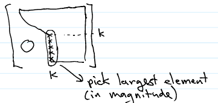
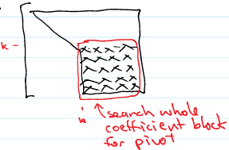

Pivoting Strategies#
In our quest to solve a linear system of equations, we have not made use of the ability to swap rows so far. If we encounter a zero pivot, we can swap rows to fix the problem. If there is no non-zero pivot, then there is no unique solution and we can exit with an appropriate error message. This suggests adding a choose pivot section to the Forward Elimination routine along the lines of
In reality, it is not actually a good idea to actually interchange rows as this memory swap takes some time and in later applications it will be useful to have a record of the swaps. In python, a straightforward way to deal with this is to have a row index array that stores which row is which in the augmented matrix. Then the row swap just consists of swapping the values in the row index and then use the row index array value in place of the row index anywhere else in the code.
We also haven’t quite tied down the find \(\text{a}_{pk}\neq 0\) step. There could easily be more than one value of \(p\) for which this would be the case. Which one should we pick? We learned in the Errors in Scientific Computing chapter that dividing by a small number can magnify roundoff errors. Given our multipliers are of the form \(\text{a}_{ik}/\text{a}_{kk}\), if \(\text{a}_{kk}\) is small we could be agravating roundoff errors. This suggests selecting the largest possible pivot in column \(k\).
{kind=link}
This will also ensure that our multipliers are all less than or equal to 1. This strategy is called partial pivoting and is usually the default for most routines. We can modify our earier Forward Elimination routine to include partial pivoting as shown below, returning our row index array. We then must modify our Back Substitution routine to use the row index array as well.
import numpy as np
def ForwardElimination(A,n):
# setup our row index array
nrows=np.array(range(0,n),dtype=int)
for k in range(0,n-1):
# select pivot element A[k,k]
pivot = A[nrows[k],k]
prow = nrows[k]
for p in range(k+1,n):
if (abs(A[nrows[p],k]) > abs(pivot)) :
prow = p
pivot = A[nrows[p],k]
if (prow != nrows[k]) :
if (pivot == 0) :
print("Singular Matrix Encountered\n")
return nrows
# As rows may have been swapped previously, we need to double index nrows
tmp = nrows[nrows[k]]
nrows[nrows[k]]=nrows[nrows[prow]]
nrows[nrows[prow]]=tmp
# Now we loop over i, the rows below the pivot row
for i in range(k+1,n):
m=A[nrows[i],k]/pivot
# Loop over j, the columns of row i
# The line below is equivalent to the following loop,
# for j in range(k,n+1):
# A[i,j] -= m*A[k,j]
A[nrows[i], k:] -= m*A[nrows[k], k:]
return nrows
def BackSubstitution(A,n,nrows):
x=np.zeros(n)
x[n-1]=A[nrows[n-1],n]/A[nrows[n-1],n-1]
for k in range(n-2,-1, -1):
x[k]=A[nrows[k],n]
for j in range(k+1,n):
x[k] -= A[nrows[k],j]*x[j]
x[k]=x[k]/A[nrows[k],k]
return x
AugmentedArray=np.array([[1,1,1,1,3],[1,2,4,8,-2],[1,3,9,27,-5],[1,4,16,64,0]],dtype=np.float64)
print("Initial Augmented Matrix:\n", AugmentedArray)
rowsindx=ForwardElimination(AugmentedArray,4)
print("Row-reduced Augmented Matrix:\n", AugmentedArray)
print("row index:\n",rowsindx)
my_x = BackSubstitution(AugmentedArray,4,rowsindx)
print("solution:\n",my_x)
Initial Augmented Matrix:
[[ 1. 1. 1. 1. 3.]
[ 1. 2. 4. 8. -2.]
[ 1. 3. 9. 27. -5.]
[ 1. 4. 16. 64. 0.]]
Row-reduced Augmented Matrix:
[[ 1. 1. 1. 1. 3.]
[ 0. 0. 0. 2. 2.]
[ 0. 0. -2. -16. -6.]
[ 0. 3. 15. 63. -3.]]
row index:
[0 3 2 1]
solution:
[ 4. 3. -5. 1.]
We see that this gives the same solution as before, but it is evident that the path to get there was different. Normally, but not always, partial pivoting works well. There are other things we can try if this doesn’t work.
Equilibration#
If the entries of our matrix \(A\) vary widely, then there is a possiblity that a very small number will need to be added to a very large number during Gaussian elimination, thereby enhancing roundoff errors. This seems like a situation where scaling the rows so that the largest element (in magnitude) in each row is about the same size (might as well be 1) would help. Does this work?
It turns out that if we equilibrate the matrix by multiplying each row by a factor so that the Euclidean norm of each row is 1, then it can be shown that the condition number \(C\) of the equilibrated matrix (or a linear system involving the matrix) versus original matrix satisfies
A better conditioned problem is also less susceptible to roundoff error escalation, so this generally never hurts and can often be very benificial. It is normally sufficient to just use the \(\infty\) norm (i.e. scale the row so that the largest element is one rather than have the Euclidian norm be one).
Note that this is equivalent to finding a invertible diagonal matrix \(D\) such that the largest element in each row of \(D^{-1}A\) is \(1\). Then solving \(Ax=b\) is found by solving \(\tilde{A}x=\tilde{b}\) where \(\tilde{A}=D^{-1}A\) and \(\tilde{b}=D^{-1}b\). In practice, we only store the diagonal in a 1D array as we know everything else is zero.
Adding a matrix equilibration to our previous routines is fairly straightforward and illustrated with our previous example below:
def Equilibrate(A,n):
scale=np.zeros(n)
for k in range(0,n):
for i in range(0,n):
if (A[k,i]>scale[k]):
scale[k]=A[k,i]
A[k,0:] /= scale[k]
return scale
AugmentedArray=np.array([[1,1,1,1,3],[1,2,4,8,-2],[1,3,9,27,-5],[1,4,16,64,0]],dtype=np.float64)
print("Initial Augmented Matrix:\n", AugmentedArray)
scalefactors=Equilibrate(AugmentedArray,4)
print("Equilibrated Augmented Matrix:\n", AugmentedArray)
print("scale factors:\n",scalefactors)
rowsindx=ForwardElimination(AugmentedArray,4)
print("Row-reduced Augmented Matrix:\n", AugmentedArray)
print("row index:\n",rowsindx)
my_x = BackSubstitution(AugmentedArray,4,rowsindx)
print("solution:\n",my_x)
Initial Augmented Matrix:
[[ 1. 1. 1. 1. 3.]
[ 1. 2. 4. 8. -2.]
[ 1. 3. 9. 27. -5.]
[ 1. 4. 16. 64. 0.]]
Equilibrated Augmented Matrix:
[[ 1. 1. 1. 1. 3. ]
[ 0.125 0.25 0.5 1. -0.25 ]
[ 0.03703704 0.11111111 0.33333333 1. -0.18518519]
[ 0.015625 0.0625 0.25 1. 0. ]]
scale factors:
[ 1. 8. 27. 64.]
Row-reduced Augmented Matrix:
[[ 1. 1. 1. 1. 3. ]
[ 0. 0.125 0.375 0.875 -0.625 ]
[ 0. 0. 0. -0.07407407 -0.07407407]
[ 0. 0. 0.09375 0.65625 0.1875 ]]
row index:
[0 1 3 2]
solution:
[ 4. 3. -5. 1.]
We obtain the same solution as before but the above methodology should be considerably more robust.
It is also possible to scale the columns to further reduce the condition number of the problem, but this is more complex so we won’t go into it here.
Complete Pivoting#
To minimize roundoff errors even further we could use a strategy called total or complete pivoting. In this case, we switch rows and columns, choosing the pivot as the maximum element in the coefficient matrix in rows \(k,\cdots,n\) and columns \(k,\cdots n\).
{kind=link}
This restricts the growth in all elements in the coefficient block we are working as it is possible to show that
Total pivoting is an option in LAPACK routines and is only done when absolutely necessary. Why? This is related to the cost of doing so, but to discuss that we first need to discuss the cost for the algorithm so far.
Computational Cost#
To evaluate the cost, we count the number of flops, or floating point operations (one addition plus one multiplication, so computing \(a+bx\) is 1 flop). Some summation formulas from first year Calculus that will be useful in this computation. We will focus on the case where \(n\) is very large.
Summation Formulas
The work of forward elimination is mostly the repeated executions of the last line of innermost loop, where each individual operation is 1 flop. As noted in the comment in the algorithm, that line is effectively part of a loop, and each loop further up results in a repition of this inner loop. We just need to count each iteration of this operation, with each loop contributing a summation sign. Which gives us
where the approximation is for large \(n\). The number of flops for back substitution is similarly calclulated
We see that the work is dominated by the work of forward elimination (\(\sim n^3\) versus \(\sim n^2\) for back substitution). You may wonder why we did not bother to include the cost of pivoting in the above calculations. It is not too hard to show that the cost of partial pivoting scales like \(n^2\), so is small compared to the overall cost of forward elmination for large \(n\). This assumes a comparison of two floating point operations takes a similar amount of time as 1 flop. Total pivoting, however, scales with \(n^3\) so adds to the cost of forward elimination substantially, which is why it is avoided unless absolutely necessary.
The \(n^3\) factor is a very daunting increase in cost as we increase the size of the system. For example, calculated somewhat more precisely we have
\(n\) |
\(N_{flops}\) |
|---|---|
3 |
\(\sim 170\) |
10 |
\(\sim 400\) |
50 |
\(\sim 44000\) |
100 |
\(\sim 340000\) |
The implications are such that if it took \(1\) second to solve a system of size \(n\) it would take close to \(17\) minutes to solve a system \(10\) times larger. As a result, we will spend some time in the next few sections examining cases where we can lower that cost.